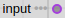
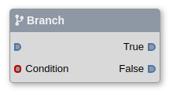
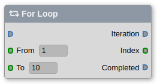
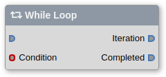
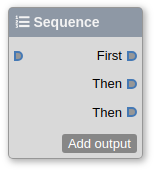
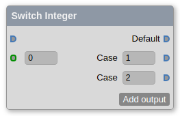

Tutorial
Nodes and connectors
A node is a an object that executes a defined job.Nodes have input connectors and output connectors.
Blue connectors with the pin control the execution flow, while circular connectors like are for passing data between nodes.
Data connectors with three dots (like in ) are arrays.
Blueprints
Blueprints are graphs of nodes properly connected to produce some result or effect.Every blueprint has at least two nodes:
• Entry point where execution begins.
• Return where execution ends.
Example: a very simple blueprint that calculates the area of a circle given the radius as input:
Area = π * Radius * Radius

Programs
A program has one or more blueprints.Think of a program as a Java class where each blueprint is a method of the class.
Programs have at least one blueprint called "Main".
The Main blueprint is executed when you run an exported JAR program (java -jar MyProgram.jar).
Flow control
Branch

The Branch node executes the True branch or the False branch depending on the input boolean value Condition.
For Loop

The For Loop node runs an iteration for each index between Form and To.Once the loop has finished, execution continues on the Completed branch.
While Loop

The While Loop node triggers an iteration while the input Condition remains true.If Condition is false, execution continues on the Completed branch.
Sequence

The Sequence node triggers a series of events in order.
Switch Integer

The Switch Integer node accepts an integer as input and sends the execution flow out of the matching output.If none matches, execution continues on the Default output.
Copyright © 2020 Fabio Leone